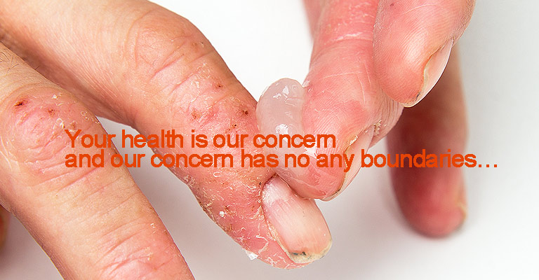

- 
產品系列


有機矽感壓膠
為確保感壓膠及皮膚黏合劑產品在製藥中的藥物傳輸和傷口護理應用的品質，黏合劑在 Healthcare Industries Materials Site 製造廠製造，採用針對活性藥物(APIs)的GMP法規的原則進行生產、包裝和檢測。

迦康新訊
- 新年快樂!迦康祝大家牛年行大運!!
- 迦康全體員工祝大家牛年行大運!
- Learn More
- 2020 DuPont 線上研討會
- 以往，穿戴式電子裝置僅應用在通訊連絡上。
但隨著科技的進步，人們也可以帶著最新的穿戴式裝置來監控自身的身體狀況。
究竟穿戴式裝置在下一世代會有哪些創新的設計及應用，
就讓 DuPont 來告訴你！ - Learn More
- 2020台北國際包材展研討會-高效新型態有機...
- 隨著科技進步,外送服務越來越方便.而2020年的一場疫情大大改變了全人類的生活習慣。如何在後疫情時代找出食品包材的新商機，這將是廠商們必定要面臨的挑戰!
- Learn More
代理項目

-
Dow Corning Corporation
道康寧公司系由美國陶氏化學公司及康寧公司以 50/50比例均等持股於1943年合資創立，為世界第一家商業化生產矽油(Silicone)之製造商，總部位於美國密西根州的米德蘭，有著分部於世界各地的供應商網路。道康寧公司以其卓越的研發技術，生產高品質的矽油及矽油相關化學產品，在臺灣的矽膠矽油市場更以其優越的品質及服務，擁有極高的市占率。
更多訊息
-
Stepan
Stepan創辦於1932年，公司總部位於伊利諾州的諾菲爾德。公司在全球擁有 17 個製造產區，現代化的生產設施網遍及位於整個北美和南美、歐洲和亞洲的12個國家，皆已通過ISO 9001:2000認證。主要生產基礎和中間化學品，包括界面活性劑、特種產品、殺菌和織物軟化季銨鹽類、鄰苯二甲酸酐（PA）、聚氨酯多元醇及特殊成分食品補充和醫藥市場。
更多訊息